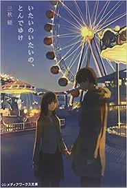
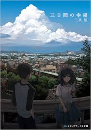
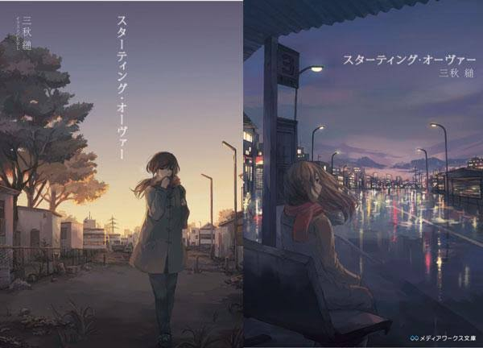

MY favorite novels
1 恋する寄生虫
2 痛いの痛いのとんでゆけ
3 三日日間の幸福
4 スターディングオーバー
潔癖症の主人公が恋に落ちてその恋愛を描いたストーリー 、一番好きな小説この作者の小説の中で一番好きで、ほんとにおすすめの作品

車で引いてしまった女の子と一緒に殺人を手伝う、というストーリーグロテスクな部分があるが、予想外の展開に引き込まれる、特に最後はほんと切ないが美しい

自分の人生のに価値をつけるとしたら？主人公は自分の人生を買い取ってくれる少女に出会い、そこから物語が始まっていく、命の尊さなどを学べる

完璧な人生を送っていた主人公はその人生を巻き戻されてしまうが、彼はもう同じく完璧一度人生を送ろうとする物語、短くて読みやすいうえに藩士の起承転結がはっきりしていて小説を読まない人にもおすすめ